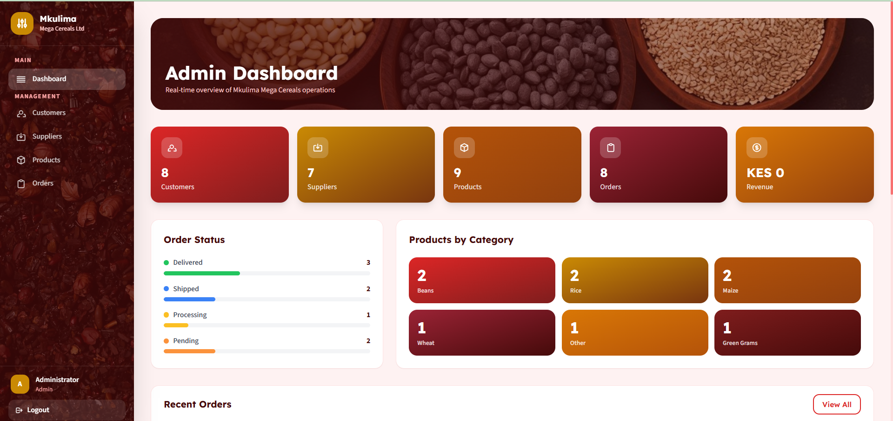
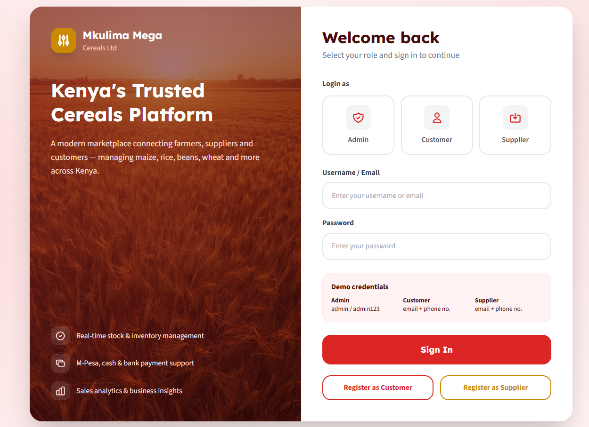
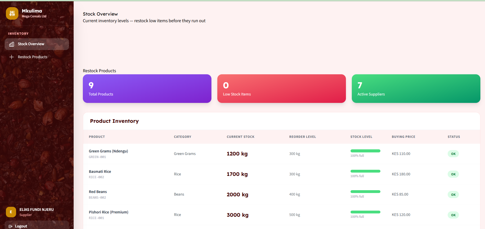
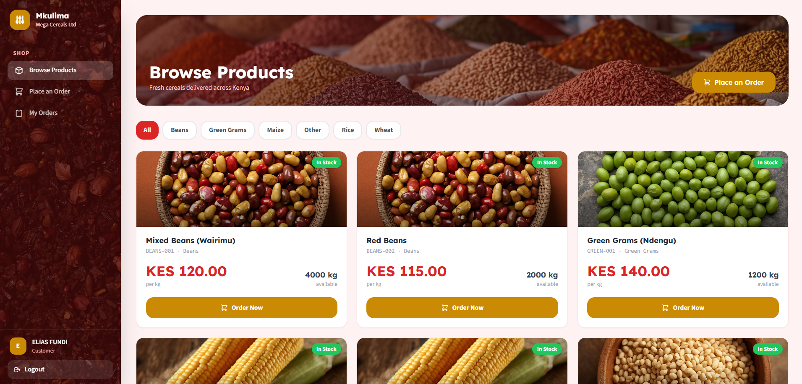

← All Work
Mkulima Mega Cereals
A full-stack supply chain management platform built for a cereals trading business. The system handles stock tracking, order management, product cataloguing, and role-based user access — replacing manual spreadsheet workflows with a centralised web application.

Admin dashboard — overview of stock, orders, and system activity.
Features
- Role-based access control — separate admin and staff views
- Real-time stock tracking with low-stock alerts
- Product catalogue management with category organisation
- Order processing and fulfilment workflow
- Secure authentication and session management

Login — secure user authentication

Stock overview — inventory management

Product catalogue — browse and manage cereal product listings.
Stack
- Flask — Python web framework
- PostgreSQL — relational database
- SQLAlchemy — ORM and database management
- Jinja2 — server-side templating
- HTML / CSS / JavaScript — front-end